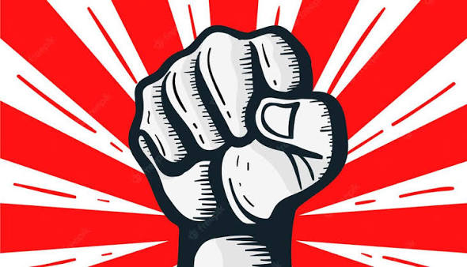

Ante las próximas movilizaciones sociales: táctica sindical, movimientos populares y el camino al Paro Nacional
Hablemos claro, sin los eufemismos que la oposición institucional se empeña en mantener. El gobierno de José Antonio Kast no es la expresión de una hegemonía ultraderechista consolidada ni de un mandato popular orgánico. Su llegada a La Moneda es el resultado de una ingeniería electoral basada en bots, fraude, financiamiento ilegal y la mentira sistemática.

I. La anatomía de un gobierno sin base orgánica
Hablemos claro, sin los eufemismos que la oposición institucional se empeña en mantener. El gobierno de José Antonio Kast no es la expresión de una hegemonía ultraderechista consolidada ni de un mandato popular orgánico. Su llegada a La Moneda es el resultado de una ingeniería electoral basada en bots, fraude, financiamiento ilegal y la mentira sistemática. No hay "mandato del pueblo" donde hay manipulación algorítmica y compra de voluntades.
Pero hasta ahora el gobierno se sostiene. Y se sostiene no por su propia fuerza, sino por dos factores que la izquierda debe mirar sin ilusiones: partamos esta vez por nosotros. La ausencia de una izquierda antisistémica organizada con un plan de lucha concreto. Nuestro análisis nos indica que este nuevo monstruo neofascista tiene pies de barro. Pero mientras no haya un bloque popular organizado capaz de disputarle la nación, seguirá avanzando en su programa expoliador. Y aquí el segundo aspecto, avanza porque la "oposición" oficial le allana el camino, declarándose "oposición frontal" mientras celebra plenos, elige presidentas de cámara y sigue sagradamente votando leyes, que de la forma en que las modifiques, profundizan la Megarreforma de esta nueva repartición de la acumulación capitalista. Es la claudicación negociadora de la oposición institucional, el liberalismo de izquierda y la socialdemocracia, incluido el Partido Comunista, cuyo papel como hemos visto en otros artículos, es fundamentalmente administrar las crisis, garantizar alternancia, la gobernabilidad y sanear la repartija "democráticamente".
II. La traición geopolítica: el "Escudo de las Américas" y el fin de la "soberanía"
Kast, como hemos venido planteando, no representa a la gran burguesía extractivista y financiera. Esa fracción del capital —explotadores de commodities, grupos económicos transnacionalizados, los dueños de la tierra y el mar, el agroexport— sigue acumulando gracias a su integración en las cadenas globales, a que las medidas tomadas por la nueva dirección del proceso económico les ha permitido ganancias parasitarias, y porque sus negocios continúan en lo esencial ligados al gran socio estratégico chileno: los Chinos. Para ellos, da lo mismo quién gobierne, lo han mostrado las últimas cuatro décadas. Mientras se respete la propiedad privada, la libertad de remesas de utilidades, la expropiación cotidiana de los fondos de jubilación de los trabajadores chilenos, ellos preferirían un país en relativa tranquilidad social.
Pero Kast y su gobierno, es la expresión política de la burguesía subordinada: el retail asfixiado por la inflación, el negocio inmobiliario con la construcción paralizada, el negocio de la educación, de la salud, de las energías renovables, de servicios, etc. Esta es la fracción del capital nacional que está siendo aplastada por la caída de la tasa de ganancia ante la baja de la productividad nacional, que roza los límites de su agotamiento. Una fracción de la burguesía desesperada, que busca recuperar su tasa de ganancia y acumular, a través de la flexibilización laboral, la sobre explotación del trabajo, la naturaleza y el desmantelamiento de las últimas redes de protección social.
Pero Kast y su gobierno de apátridas no actúan solos. Para cumplir lo prometido con sus financistas y beneficiarios, se alinea con Trump, y con él, con el resto de países de América Latina que han sido absorbidos por la esfera neocolonialista de EEUU. Se suma al "Escudo de las Américas", entregando la supuesta soberanía o lo que quede de soberanía nacional al imperialismo norteamericano. Y esto no es solo una traición ideológica para los intereses nacionales: es un riesgo concreto para la estabilidad geopolítica que necesita la gran burguesía para seguir acumulando con China. Kast está dispuesto a quemar la estabilidad interna e internacional del país con tal de asegurar un proceso de acumulación acelerado para sus mecenas.
La crisis fronteriza con Argentina —donde la ultraderecha chilena se somete al liderazgo ideológico de Milei— no es un incidente diplomático. Es la expresión de una entrega activa de la soberanía a los intereses del imperialismo norteamericano y a la lógica de la acumulación por desposesión de las fracciones más reaccionarias del capital. El nuevo "Plan Monroe", rebautizado "Donroe", requiere hoy apropiarse del continente entero de norte a sur, cosa que ya ha conseguido con Groenlandia. Pero ante la guerra desatada en el occidente cercano (Irán vs EEUU e Israel) y el consecuente cierre de importantes pasos comerciales, incluyendo ahora la nueva amenaza sobre el estrecho de Gibraltar, la posición del Estrecho de Magallanes resultaría esencial como alternativa de navegación comercial. Y eso acerca la guerra mundial latente más aún a Latinoamérica.
La necesidad de una postura de defensa de la integridad territorial, del Estrecho de Magallanes, de la Antártica, no es un gesto patriótico vacío ni una defensa del Estado burgués: es una demanda democrático-popular y antiimperialista concreta. Es defender la paz de la región, es defender recursos medioambientales para las futuras generaciones de chilenos. Es también la oportunidad política de desenmascarar los discursos patrioteros de la ultra derecha con los que embaucan a grandes sectores sociales de nuestro país. Esta postura debe ser levantada desde una mirada nacional-popular internacionalista, que convoque a los trabajadores de ambos lados de la cordillera. Porque en Argentina también hay sectores que denuncian la llegada sionista, la venta de territorio, la entrega de la soberanía. La defensa del Estrecho no es un asunto "chileno-argentino" en abstracto: es un punto geopolítico clave donde el imperialismo norteamericano busca asegurar su dominio continental. Y los trabajadores de Chile y Argentina tienen más en común entre sí que con Kast y Milei.
III. Desarmar al fascismo: la izquierda ante el "patriotismo" y la inmigración
Aquí viene un punto donde la izquierda revolucionaria contemporánea muestra su mayor debilidad. No solo ha abandonado principistamente la lucha electoral, sino que también ha abandonado el concepto de "patria" y "nación", dejándolo todo en bandeja de plata en manos de la extrema derecha. Peor aún, por otro lado el "buenismo" abstracto del "progresismo chileno", hoy "oposición", le impide ver, o derechamente permiten, que la burguesía utilice la inmigración como un ejército industrial de reserva y una fuerza de choque paramilitar.
Los gobiernos de derecha, invitan, nacionalizan y utilizan a sectores de la inmigración vinculados al narcotráfico y a la extrema derecha latinoamericana para generar terror en los barrios populares. Para cometer crímenes que les permiten imponer leyes, para elegir autoridades, etc. El objetivo es claro: usar la violencia lumpen para justificar la militarización, romper la solidaridad de clase y disciplinar a la población mediante el miedo. No es casualidad: es una estrategia homeostática de control social.
Desde una perspectiva de soberanía popular y defensa de los territorios de la clase trabajadora, debemos decirlo claramente: hay que exigir desde nuestra posición de izquierda revolucionaria antisistémica, la repatriación inmediata de los sujetos vinculados al narcotráfico y al paramilitarismo, poner límites estrictos al ingreso e imponer restricción de derechos políticos y sociales nacionales mientras esta inmigración forzada opere como herramientas de desestabilización social y política patrocinadas por el Estado y las fracciones reaccionarias. No es xenofobia: es defensa de clase.
En resumen, debemos contraponer al "patriotismo fascista" —que es sumisión a EE.UU. y odio al pobre— un "patriotismo popular", anticolonial y antiimperialista: la defensa del territorio, de nuestros recursos, de nuestra naturaleza a través de la lucha medioambiental y la cohesión de la clase trabajadora nacional frente al saqueo extranjero y la violencia narcotraficante patrocinada por el Estado.
IV. El sujeto en disputa: proletarización, multitudes
En Chile, lo sabemos, la base industrial actual es mínima. El obrero fabril clásico es una minoría. Pero eso no significa que el proletariado haya desaparecido: significa que se ha expandido y diversificado. Hoy, si eres asalariado, eres proletario. La proletarización ha alcanzado ya a amplios sectores de las clases medias profesionales: profesores, técnicos, funcionarios públicos, trabajadores de servicios, profesionales precarizados. La deuda —CAE, crediticias, hipotecas— es el mecanismo mediante el cual el capital financiero extrae plusvalía de estos sectores.
Por tanto, el sujeto revolucionario no puede ser hoy una "identidad pura" (el obrero industrial), sino el resultado de un proceso de explotación sistémica que atraviesa a millones de trabajadores en todos los ámbitos. Por otro lado, los movimientos feministas, ecologistas, estudiantiles, territoriales no son "exterioridades" al capital, ni "nuevos sujetos" contrapuestos al proletariado. Son dimensiones de la misma explotación. El feminismo lucha contra la opresión patriarcal que abarata la fuerza de trabajo. El ecologismo lucha contra la depredación que externaliza costos sobre los territorios populares. Estas luchas son parte constitutiva de la lucha de clases, no apéndices.
El problema actual es que estos movimientos, en gran medida, están capturados por sectores pequeñoburgueses no clasistas o por ONGs que con sus recursos y profesionales arrebatan el control de las demandas. El feminismo liberal que celebra a una CEO mujer pero no cuestiona la explotación laboral. El ecologismo que "legaliza" las luchas, no es muy distinto del mercado que vende "bonos de carbono" pero no toca la propiedad privada de los recursos. A pesar de ello la tarea no es despreciar estos movimientos, sino disputar su dirección, sacarlos de la órbita de las ONGs y la pequeñoburguesía ilustrada, y articularlos con la lucha clasista consecuente.
Y aquí viene la autocrítica más dura que debemos hacernos: TODO el pueblo es sujeto de lucha, no solo los sectores "puros", marginales o "netamente populares". Las organizaciones políticas antisistémicas no pueden colocarse fuera de la tesis (el sujeto en lucha) y ubicarse solo en el campo de la antítesis (como quienes luchan "puristamente" contra el sistema, como un factor no afectado). Ellas también son parte del sujeto en disputa, también están atravesadas por la alienación. La práctica de cierta izquierda antisistémica durante las últimas cuatro décadas muestra un nivel de alienación tan importante como el sentido común dominante entre las clases populares: el fetichismo de la pureza, el moralismo hegeliano, el sectarismo que excluye a "los contaminados", la creencia de que su organización es el "sujeto puro" que salvará a las masas ignorantes. Tampoco puede comenzar a escoger qué sectores de pueblo son los "valiosos", los verdaderos, los puros, los consecuentes, etc. Excluyéndolos de las tesis emancipatorias.
V. Una táctica de masas: del sindicalismo clasista al Paro Nacional con todo el bloque popular
Vamos a decirlo sin sutilezas, seguir despreciando a la CUT y a los gremios tradicionales esperando la construcción de un "nuevo sindicalismo de clase" es una nueva derrota asegurada. Sin el sindicalismo tradicional en las calles, nos guste o no, el Paro Nacional es una ilusión voluntarista. Van 20 o 30 años de grupos políticos que desechan el sindicalismo existente como si nada, hablando de hipotéticos procesos de un nuevo sindicalismo de clase que, lamentablemente, se mantiene en pie en pequeños sindicatos, que aún no suman lo necesario para impulsar al movimiento popular. Y no es que no hayan tenido organización y poder: Sus ideas fueron probadas, ahí está el siempre combativo movimiento de trabajadores portuarios y del mundo del montaje industrial y la construcción. Grandes sindicatos hoy burocratizados, instrumentalizados por las empresas, atomizados, divididos y corrompidos, con una que otra excepción.
Sin embargo, para el actual contexto de luchas que se inicia, son problemas distintos. La tarea del sindicalismo clasista resulta fundamental: está logrando organizar áreas que precisamente abordan ese sujeto volátil y precarizado producto de las nuevas condiciones del mundo del trabajo que reconocemos. Ha logrado avances. Y en este contexto de rearticulación de las luchas sociales que se avecina, deberá probar la fortaleza que pueda tener, tensionándose hacia la disputa ética e ideológica contra las direcciones burocráticas del sindicalismo tradicional, y el mundo del trabajo en general. Pero aquí viene la precisión clave: ese trabajo de base ya lo hacen los sindicatos clasistas, pero en nuestra opinión, no puede seguir haciéndolo de espaldas al sindicalismo tradicional. De lo que se trata es de orientar parte de su quehacer hacia los grandes gremios, quizá inicialmente donde haya cercanía (del Estado, mineros, portuarios, profesores, salud), claramente manteniendo la autonomía política, pero manejando un plan de cercanía, de conversaciones, de exigencias, de propaganda concreta a las bases sociales, exponiendo las cúpulas burocráticas negociadoras ante la agresividad del gobierno patronal. Digamos que un trabajo de diplomacia, de acercamiento y exigencia. Que su labor no se repliegue sobre sí misma, sino que se dirija hacia donde están las masas organizadas.
Y aquí viene un punto que no podemos evadir: la cuestión de la autodefensa popular. En nuestra perspectiva, las luchas hoy deben apuntar a la masividad y la inclusión, no a la búsqueda de la violencia irreflexiva de varios sectores que en esta etapa —ojo, en esta etapa— no ayudan a construir. La masividad es la primera línea de defensa: un paro con miles en las calles es más difícil de reprimir que una vanguardia aislada. Lo vivimos el 18O en su primera etapa. Pero si la represión llega —y llegará—, la respuesta no puede ser la inmolación heroica que saque al ciudadano de las calles. Debe ser la autodefensa organizada de la movilización: piquetes de protección, cordones de contención, ocupación de territorios. Si hay que defender la movilización, se defiende, conocemos las capacidades de lucha de los compañeros: pero con cabeza, con organización, al servicio de la masividad, no como un fin en sí mismo.
El Paro Nacional o la Huelga General, como apuntan otros sectores, no es algo que se decreta; se construye tejiendo esta alianza táctica entre la vanguardia clasista, las bases del sindicalismo tradicional y los movimientos populares. El Paro Nacional unifica las demandas económicas inmediatas (salario, pensiones, vivienda) con las demandas de soberanía (recursos naturales, territorio, integridad nacional) y las demandas de emancipación (feminismo, ecologismo popular). Es la culminación de un proceso de acumulación de fuerzas, no un acto voluntarista.
VI. La hora de la política y la organización
Finalmente lo repetimos, el gobierno de Kast es un gigante con pies de barro: sostenido por el miedo, el fraude y la claudicación de la oposición. Pero también sostenido por nuestros errores. La tarea de la izquierda revolucionaria no es la performance moral ni la queja por la "pérdida de la democracia liberal", o nuevamente los textos teoricistas, sobreideologizados con posturas generales, sino la construcción paciente y audaz de un plan de luchas táctico y estratégico para el bloque popular que dispute la nación, su futuro y bienestar social concreto. Defender a nuestra clase y preparar las condiciones materiales para el Paro Nacional, y un ulterior proceso constituyente.
Este bloque popular no es, ni será nunca "puro": es y será contradictorio, conflictivo, está atravesado por la alienación, incluye a sectores que aún no tienen conciencia clasista plena. Pero es real, es masivo, y es el único que puede derrotar al neofascismo. En este empeño debemos templar nuestra voluntad de lucha.
Y cuando hablamos de "proceso constituyente", lo decimos con todas las letras: no hablamos de institucionalidad, no hablamos de una nueva convención que se reúna en el edificio del ex Congreso. Hablamos de un pueblo articulado apropiándose del poder, construyendo sus propias formas de decisión desde los territorios, los lugares de trabajo, las comunidades. Eso no será algo inmediato, tal como no saldremos con una revolución de este gobierno: será el resultado de un proceso de acumulación de fuerzas, de organización, de conciencia. Comenzará cuando el Paro Nacional haya demostrado que el pueblo organizado es más fuerte que el gobierno de los bots, mentirosos y avariciosos.